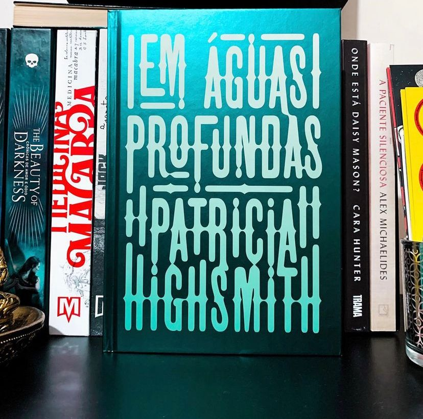

Em Águas Profundas
Nós definitivamente precisamos falar sobre Thriller maravilhoso da Patricia Highsmith, uma das maiores autoras de Thrillers psicológicos de todos os tempos.
Nessa história nós vamos conhecer o casal não tradicional Vic e Melinda, o casamento é mantido por um acordo: eles decidem não se divorciarem por causa da filha, não queriam trazer a garota para todo o caos e trauma de uma separação. Até aí tudo bem, certo? Mas tem uma coisinha a mais nesse acordo: Melinda pode ter quantos amantes ela quiser! Isso mesmo, em plena década 50! E além de tudo Vic acaba conhecendo e até saindo com algum desses amantes. A gente sabe que muita coisa pode dar errado nisso tudo. Mas, não para por aí, a coisa fica bem complicada quando Vic começa a se incomodar com um dos homens escolhidos pela esposa e adota uma estratégia um pouco drástica para afasta-lo, assumindo a autoria do assassinato de um deles. Só que a notícia se espalha por toda a cidade do interior dos Estados Unidos e o antes cidadão-modelo, benfeitor, marido mais do que tolerante e empreendedor não valorizado pela esposa vira alvo da maledicência de todos.
A história é muito bem construída, os personagens e a forma como Patrícia escreve não te deixa largar o livro. Ela consegue abordar os temas mais profundos e sombrios da mente humana de uma forma única. A narrativa nos mostra que debaixo da superfície de cada pessoa podem se esconder as mentes mais sombrias, sórdidas e psicopatas.